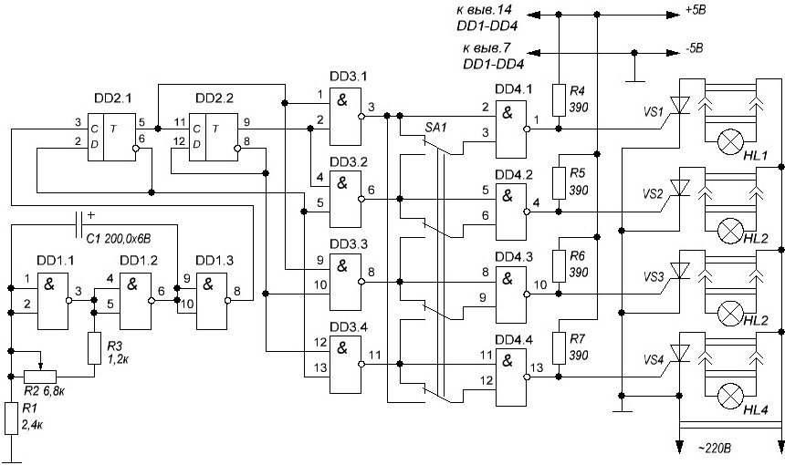
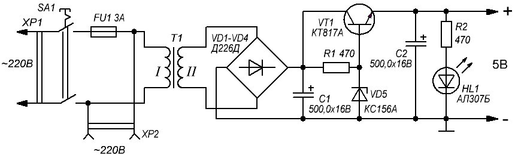

Бегущие огни на ТТЛ-микросхемах
Первая микросхема (рис. 1) работает в схеме задающего генератора с переменной частотой. Регулируется частота переменным резистором R2, а сам генератор собран на элементах DD1.1, DD1.2. DD1.3 служит буфером, чтобы последующие каскады схемы не мешали работе генератора. Далее прямоугольные импульсы с вывода 8 элемента DD1.3 поступают на счетчик, собранный на двух D-триггерах DD2.1, DD2.2, работающих в режиме деления частоты. Оба они содержатся в корпусе одной микросхемы К155ТМ2. Третья микросхема (DD3) выполняет роль дешифратора, преобразующего двоичный код, поступающий со счетчика, в последовательность импульсов.
И, наконец, микросхема DD4 представляет собой буфер, способный управлять мощными тиристорами, и инвертор одновременно. Именно поэтому в качестве DD4 использована К155ЛА8 – 4 элемента 2И-НЕ с открытым коллектором и мощным выходным транзистором. Тиристоры не случайно выбраны КУ201Л – они открываются током около 8 мА, что вполне под силу К155ЛА8. Поэтому менять их на другие не стоит.
При указанном на схеме положении переключателя SA1 все гирлянды включаются по очереди, создавая эффект бегущего огня, скорость «бега» которого можно регулировать переменным резистором R2. Если переключатель перевести в нижнее по схеме положение, то будут зажигаться одновременно по две гирлянды. Если мощность каждой из гирлянд не будет превышать 60 Вт, то тиристоры можно на радиаторы не ставить.

Рис. 1 - Схема "бегущих огней" на ТТЛ микросхемах
Таблица 1
| Обозначение | Наименование | Номинал | Количество | Примечание |
|---|---|---|---|---|
| C1 | Конденсатор электролитический | 200 мкФ/6В | 1 | |
| DD1, DD3 | Микросхема | К155ЛА3 | 2 | |
| DD2 | Микросхема | К155ТМ2 | 1 | |
| DD4 | Микросхема | К155ЛА8 | 1 | |
| HL1-HL4 | Лампа накаливания | 4 | гирлянда | |
| R1 | Резистор постоянный | 2,4 кОм | 1 | |
| R2 | Резистор постоянный | 6,8 кОм | 1 | |
| R3 | Резистор постоянный | 1,2 кОм | 1 | |
| R4-R7 | Резистор постоянный | 390 Ом | 1 | |
| SA1 | Переключатель | П2К | 1 | |
| VS1-VS4 | Тринистор | КУ201Л | 4 |
Схема бегущих огней, собранная без ошибок и из исправных деталей, в настройке не нуждается. Единственно, если вас не устраивает скорость бегущего огня, то можно изменить емкость конденсатора С1 (тоже электролитического). При увеличении емкости скорость будет ниже, при уменьшении – огонь «побежит» быстрее.
Питается устройство стабилизированным напряжением 5 В и потребляет ток около 70 мА. Собрать его можно по самой простой схеме (рис. 2)

Рис. 2 - Схема блока питания
Трансформатор с выходным напряжением около 8 В, диодный мост (можно использовать любые выпрямительные на соответствующее напряжение и ток или даже готовый диодный мостик), транзистор КТ817 с любой буквой, который нужно поставить на радиатор – алюминиевую пластинку размерами около 2×3 см. Конденсатоы С1 и С2 – электролитические, светодиод HL1 выполняет роль индикатора включения питания – его при желании вместе с резистором R2 можно не устанавливать.